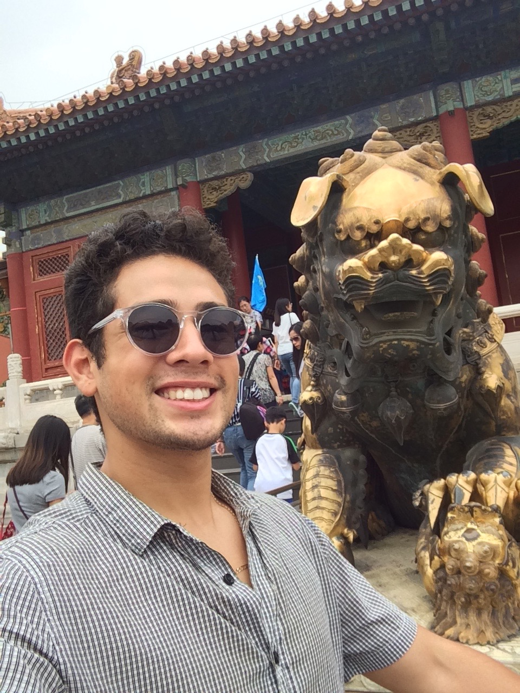

About Me
I am a full-time father that loves to play basketball, do MMA and snowboard. My passion is creating new ideas to help in creating a healthy life and provide protection.
My two skills that are priceless is the ability to learn/formulate new ideas and puzzle solving. Capacity to learn comes from a mind-state, but if I challenge my mind to learn a new design. It would be possible to take it to the next level by formulating a new idea. My ability to solve difficult and challenging puzzles leads me to my actual passion computer programming.